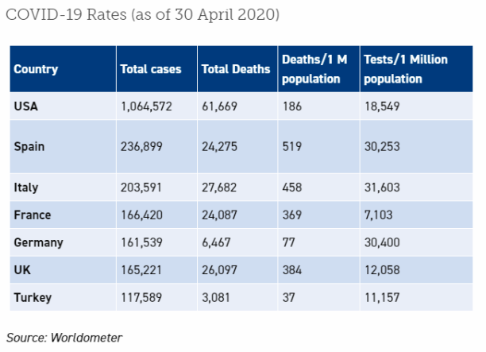

Domestic Policy
Onur Talu
Environmental Consulting at Olin - Spring 2020
Domestic Policy at the times of COVID-19
A little less than two months ago, President Miller’s email sent almost all Olin students, faculty and staff home - to continue the rest of the spring semester online. Everyone had to adjust to the new realities that come with working and studying from home, and live under circumstances that are alien to most people. Similarly, local and national governments had to respond to a pandemic, the likes of which most haven’t encountered in a very long time. Their differing domestic policies around the world showed that the ability to mobilize quickly, healthcare coverage, and public trust are crucial elements to successfully mitigating the damages of the pandemic.
Ability to Mobilize
One of the glaring realities this pandemic exposed has been how the concerns of the governments about their economies clouded their judgement on how to approach this pandemic. The authorities in Lombardy, one of Europe’s richest and most productive regions, didn’t want to halt the region’s economy, which is a major contributor to the country’s struggling economy. The mayor of Milan even went as far as unveiling the "Milan Doesn't Stop" campaign, allowing bars and restaurants to remain open. The Prime Minister didn’t issue a national lockdown until March 10, nearly three weeks after the first reported case in the case. The results have been detrimental, with the country's hospitals - especially in the Lombardy region - congested with patients, running out of bed capacity and needing to convert their wards to intensive care units, and seeing nearly 30,000 deaths - highest per capita in the world.
In contrast to Italy, the authorities in South Korea - who were heavily affected by their previous run-in with MERS in 2015 that killed 38 - had the political will to mobilize rapidly, and prioritize public health over the strength of their economies. The South Korean government sought preventative measures, which according to President Moon Jae-in, "“should be strong enough to the point of being considered excessive”" - which is in strong contrast especially to how the US federal government handled the crisis. Only three days after Chinese officials informed the World Health Organization (WHO) of a previously unidentified form of pneumonia in December 31, Korean Center for Disease Control and Prevention (KCDC) set up an emergency team to study the disease.

Figure 1- Drive-in COVID-19 Testing Stations in South Korea (Source)
With a government committed to gutting the impact of the outbreak, the biotechnology sector in the country stepped up as well. Kogene Biotech developed a test for the disease and got it approved by KCDC by February 10th, and three other companies following suit by February 27th. Authorities tested not only those suspected to carry the disease, but isolated all who tested positive and monitored their contacts and tested them as well. Opening drive-in testing stations - modelled after McDonald’s and Starbucks - the government encouraged its citizens to get tested free of charge, curbing the spread of the disease before it could get to the levels we’ve seen in Italy.
Healthcare Coverage
While the availability of free testing to masses, isolation and monitoring of patients who tested positive allowed the South Korean government to successfully curb the spread of the disease, its death rates wouldn’t be as low, without the presence of its strong nationalized healthcare system. Having the second highest number of hospital beds per capita in OECD, South Korean healthcare system allowed for every infected patient to receive the care they needed, at no cost. One might argue that having a nationalized healthcare system is a necessity to tackle the crisis fairly and successfully, coverage is what differentiated Turkey from ending up like Northern Italy.
Initially, a similar theme to Italy’s Lombardy region emerged in Turkey, who reported their first case on March 11, a day after President Miller sent out his email to the Olin community and more than a month and a half after the first reported case in the US. Even with the weeks-long period the country could have used to prepare for the outbreak, the government didn’t have the economic breathing room other countries have to impose strict lockdowns. The unemployment rates are as high as their post-recession levels in 2008, with youth unemployment reaching as high as 27%. Since 2010, the Turkish lira has depreciated against the US dollar by more than 400%. With such a weak economy, the government pursued stimulus packages and weekend lockdowns, aiming to mitigate the economic impact of the crisis, but hoping to keep businesses open during the week. With a good portion of its population living in highly populated urban areas, these measures were not strong enough to prevent the country from having one of the largest infection rates in the world - ranking seventh in the world in the number of confirmed cases.

Figure 2 - Infection and Death Rates in certain OECD Countries as of 04/30/20 (Source)
Although the lack of necessary social distancing measures caused the virus to spread rapidly in Turkey, the death rate in the country is almost 1/20th of what it is in Italy. While that can be partly attributed to the much younger population of Turkey or the suspected lack of accuracy in the statistics reported by the Health Ministry, part of it is due to the coverage in the country. The country has seen a surge in ICU capacity - largely due to the recent trend in privatisation in the healthcare industry - providing the healthcare system with the necessary infrastructure to treat the infected patients. This was not the case in Northern Italy, as the region quickly ran out of ICU beds with the heavy influx of patients, resorting to
converting hallways to ICUs and needing to prioritize ICU care for patients, who are more likely to survive.
Public Trust
While a strong political will to enforce extraordinary policies has been important during the pandemic, it is not nearly as effective without public trust. In Sweden, the government didn’t even enforce a strict lockdown and instead has pursued a “herd immunity” policy, relying on the trust between the public and the government: Swedish restaurants, bars, schools, gyms, and hairdressers remained open - with certain social distancing measures in place. This policy yielded more infections and deaths than all of their Nordic neighbours, “however their death rate remained far below Ireland, Britain or France, without compromising on their economic activity nearly as much as the others”. As opposed to Italy, the UK or the US, Sweden never ran into the problem of overcrowded hospitals and ICUs, largely due to the public being on board with the government and its institutions policies and regulations, and the government trusting its citizens.

Figure 3 - People in line for a bakery shortly before the lockdown (Source)
While Sweden’s domestic policy during one of the most serious public health problems that threatened the Global North is unconventional, it is a strong democracy, where public trust is strong. On another hand, the lack of public trust of the government came as a vulnerability of all authoritarian regimes around the world in crisis management. For years, critics pointed out that Turkey’s inflation and unemployment rates were higher than reported - degrading the public trust in government announcements. Even now, analysts argue that the government is being dishonest with the Health Ministry’s
reported number of cases and deaths. Back on April 10th, when the government declared a national lockdown for 48 hours on a Friday night, effective only hours later, crowds rushed the streets in search of essentials at the nearest supermarkets, corner stores and pharmacies. A measure, which was intended to limit social interactions, led to overcrowded streets and pharmacies, as well as depleted supermarket shelves that used to store the essentials. President Erdoğan’s authoritarian regime rests on instilling fear in its citizens against dissidence. This might help keep him in power for a period of time, however it leaves him vulnerable during public health crises as such.
In Conclusion
After almost two months of socially distancing and online classes in the US, Italy, along with most of Western Europe, has started slowly reopening small businesses. Lives of Swedes have been changed minimally since the first official case in the country, however the future is very uncertain for the Turkish. The differing domestic policies and their successes and failures showed us that the ability to mobilize quickly, comprehensive healthcare coverage and the strength of public trust are important to addressing this public health crisis.